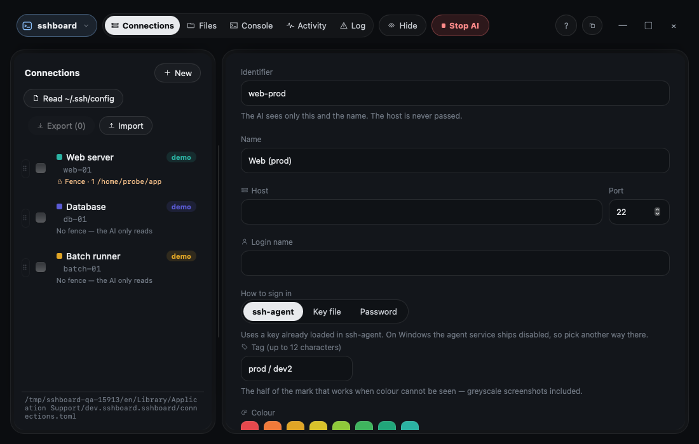
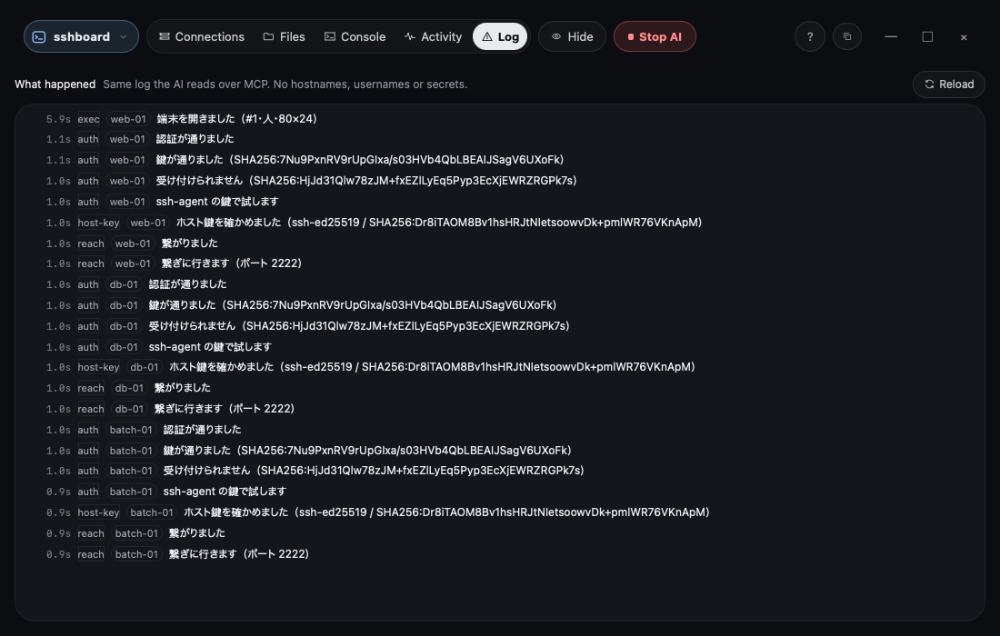

You and your AI agent, on one SSH session.
Most agent tooling gives a model a run_command(cmd) hole and lets it work
somewhere you aren't looking. sshboard does the opposite: the agent and you hold
the same SSH connection, and everything it does lands on a screen you are sitting in
front of. There is no second, invisible session.
macOS (Apple Silicon · Intel) · Windows x64 / ARM64 · 11 languages

The fence
These are constraints on the code, not advice in a prompt. They hold whether or not the model cooperates.
- There is no
run_command(cmd)tool. Not a filtered one, not a clever one. An agent cannot hand an arbitrary string to a shell. - Read-only commands come from a list you wrote.
readonly.tomlstarts empty, so out of the box the agent cannot run a single command. - Writes are fenced to directories you listed, per connection. That list also starts empty. Upload and mkdir only — no delete, rename, move, chmod, service restart or package install.
- There is no download-to-my-machine tool. The fence does not protect your laptop, so the agent doesn't get a door onto it.
- State-changing operations need a human press, and the first attempt is always refused so the screen can show you exactly what would run. Approvals expire in 5 minutes and cover one run.
- Keys stay in the OS credential store and ssh-agent. sshboard does not implement a key store, and the tool that lists connections returns identifiers, never credentials.
What you are looking at
One window, five tabs. These were taken against a made-up configuration — every screenshot of this product would otherwise carry somebody's hostname, username and paths. The three servers below do not exist; they point at a throwaway container on the machine that took the shots.
Connections
The servers you registered, and the button that opens one. Credentials live in the OS credential store and ssh-agent, never here.

Files
Two panes: the server on one side, your machine on the other. Upload, download, make a directory. The agent is fenced to directories you listed; you are not.

Console
A real terminal on the same SSH connection — shared with the agent. While the agent holds it your input is locked out and a Stop button is showing. It never opens a second session you can't see.
Activity
Who did what. One line per operation, tagged [Human] or [AI], in the order it happened. This is the tab you read to answer "what has the agent been doing?"

Log
Why something failed. Connection stages, errors, and what to do about them. This is the tab you read when something did not work — and the one to copy from when you file an issue.

How you use it
- Register a server. Connections tab → add one. You give it an id, a name, a host and a user. The passphrase or password is never stored by sshboard — it goes to the OS credential store, or you leave it to ssh-agent.
- Open it. It becomes a tab. Several can be open at once, and every one of them is visible. If a key needs a passphrase, the question appears on your screen — the agent cannot answer it.
- Work in Files or Console. Both run over that same connection. Nothing the agent does happens on a different one.
- Point your agent at it (below). Ask it to look at something. What it runs appears in Activity as it happens, and its output appears in the same Console you are watching.
- Approve what changes things. Reading is fenced by an allow-list you wrote. Anything that changes state is refused the first time and shown to you in full before it can run — and the approval is good for one run, for five minutes.
Examples
Three afternoons, each on made-up servers. Every page starts with what you use, what you find and how it ends.
What the agent can do
tools over MCP. These are the exact descriptions the agent reads, so they are shown in English as it sees them. Note what is not here: there is no tool that takes an arbitrary command string, and no tool that downloads to your machine.
Show every tool, with the exact description the agent reads
Download
Older versions are on the archive page.
Installing on macOS
Open the .dmg and drag sshboard into Applications. The
.app.tar.gz sitting next to it in the release is what the auto-updater
consumes — you don't need it.
Then open it from Finder with right-click → Open the first time.
Installing on Windows
Run the -setup.exe. Windows needs WebView2; Windows 11 and recent 10
already have it, and if not the installer fetches it — so the first install needs a network
connection.
Source: GitHub · Tauri 2 · SvelteKit · Rust
Connect your agent
Point your agent at the running app. This form starts sshboard as a relay with no window, so
the token is never written to disk — not into ~/.claude.json, not into
your shell history.
# macOS claude mcp add --scope user sshboard -- /Applications/sshboard.app/Contents/MacOS/sshboard --mcp-stdio-proxy # Windows claude mcp add --scope user sshboard -- "%LOCALAPPDATA%\\sshboard\\sshboard.exe" --mcp-stdio-proxy
The relay holds no engine and opens no connection of its own — only the app does, which is
the point. It is a one-time step: the port is fixed at 22022 and the token is
reused, so restarting does not make you register again. If the port is taken it says so on
screen rather than quietly moving. (There is a plain HTTP form too, but that one leaves the
token in a file — the window has a button that copies it if you want it.)
Ask it about_sshboard first — the tool exists so an agent can find out what this
is, what it may and may not do, and what changed in each version, without you pasting a
briefing.
Pair it with dbboard and the deploy is yours
Plenty of systems are still released by hand: someone opens an SSH session, copies the files up, then opens a database client and runs the migration. There is no pipeline to hand an agent, and building one is its own project — a runner, a hosted service, credentials sitting in someone else's vault.
Two desktop apps cover both halves. sshboard puts the files where they go; dbboard runs what has to run against the database. The agent does the steps and you are in the room for all of them, on both sides — no CI service, no deploy platform, no secrets uploaded anywhere.
sshboard — the server half
Upload into directories you listed. Run commands from a list you wrote. Take the
terminal back at any time. No run_command hole, and no tool that
reaches back down to your own machine.
dbboard — the database half
Nine engines, from MySQL and PostgreSQL to Turso, D1 and Firestore. Read-only
until you opt a connection in, and even then grants, role DDL,
TRUNCATE and DROP are refused whatever you set.
There is a third one, warifu, for a different question: several people and several agents in one conversation, peer to peer, with no central account. It is not part of the deploy story.
Where it actually is right now
The features are in. The interface is not finished. sshboard is being used against a real production server, and the whole visible issue list came out of that use — but it has not had a design pass yet, and it shows. If you are looking for something polished, this is not it yet. If you are looking for something whose safety model you can read end to end, it is ready for you to argue with.
Working
One shared SSH session (GUI + agent)
The MCP tools listed above
Read-only commands from an allow-list
Health checks a person writes, run by either side
Approved state-changing operations
sudo with a password nobody stores
Terminal shared with a stop button
The agent woken when you answer (Claude Code channels)
Auto-update · Apple Silicon and Intel Macs
Not yet
A design pass on the UI
Code signing
ssh-agent on Windows (named pipe / Pageant) — unverified
Linux builds
What is done, what is next, and what it will not do: the roadmap.
What it will not become
- A way to run an agent against a server while nobody is watching.
- A place your keys or passphrases get stored.
- A tool that opens a second SSH session you cannot see.
Frequently asked questions
What is sshboard?
A desktop SSH client with an MCP server built in. You and your AI agent look at the same server, on the same screen, over one SSH connection, and everything the agent does appears in your window as it happens.
Can the agent run any command it likes?
No. There is no tool that takes a command line. The agent can use read-only tools, run commands a person listed in readonly.toml by id, and ask to run operations a person listed in operations.toml — each of those asks you on screen first.
Where can the agent write files?
Only inside the directories you list for each connection. The list is empty by default, so it writes nothing until you add one. It cannot delete, rename or download files to your machine.
Does sshboard store my keys or passwords?
No. Keys stay in your OS keychain and ssh-agent. A sudo password you type for one approved operation is passed to that one run and never stored.
Which agents and systems does it work with?
Any MCP client; Claude Code is the one it is tested with. The app runs on macOS (Apple Silicon and Intel) and Windows (x64 and ARM64).